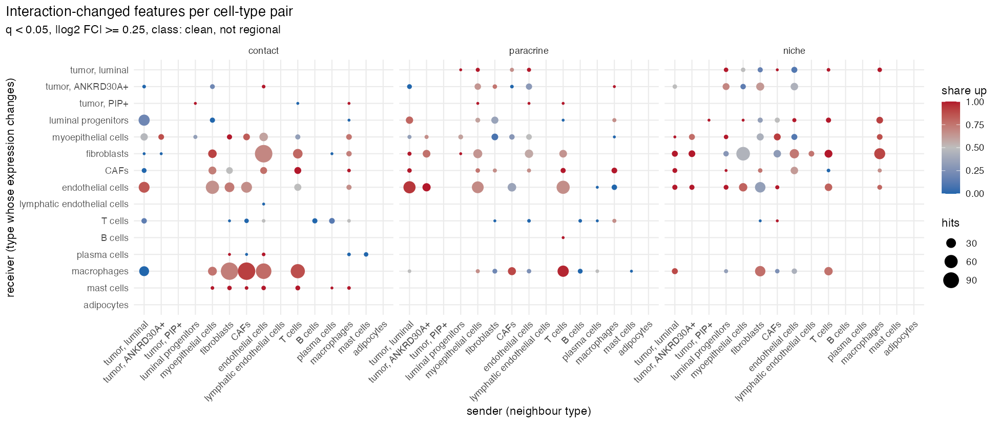
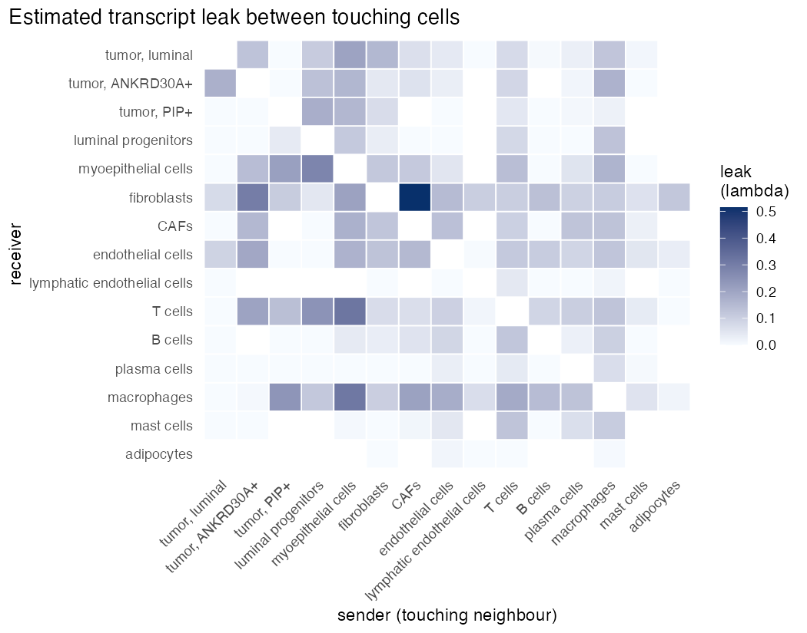
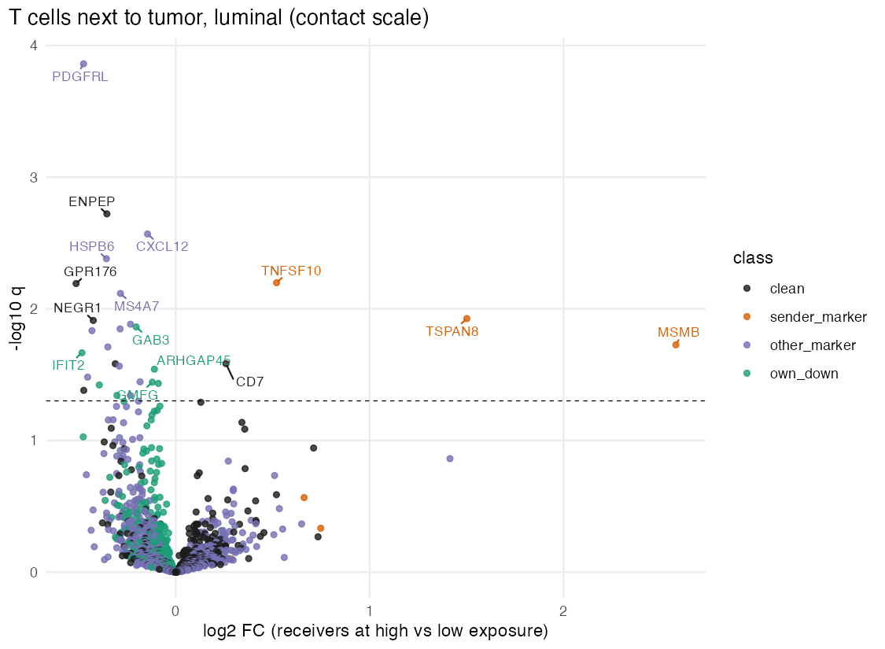
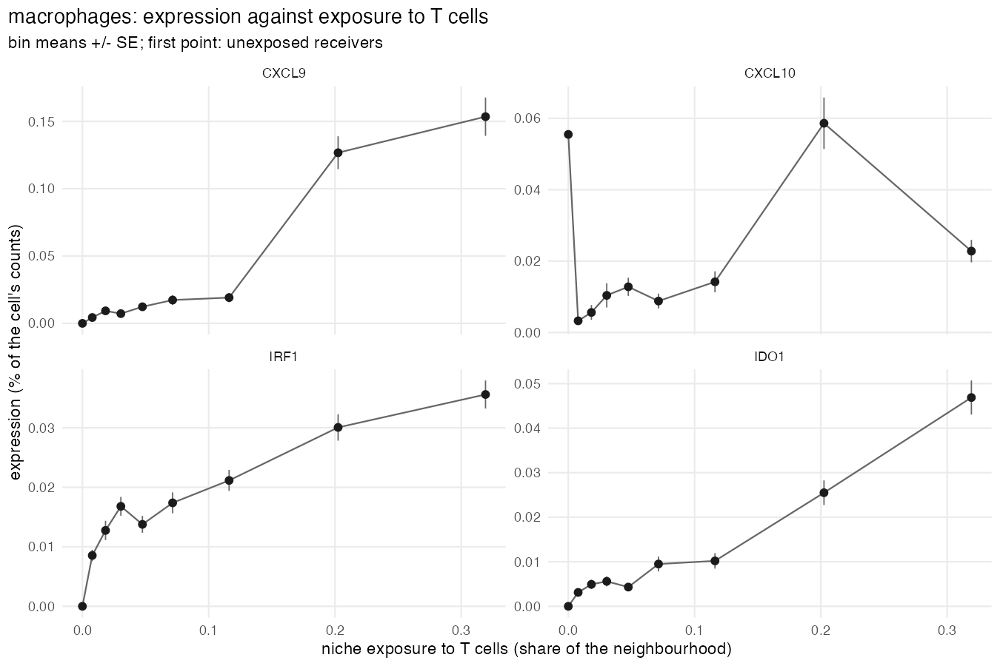
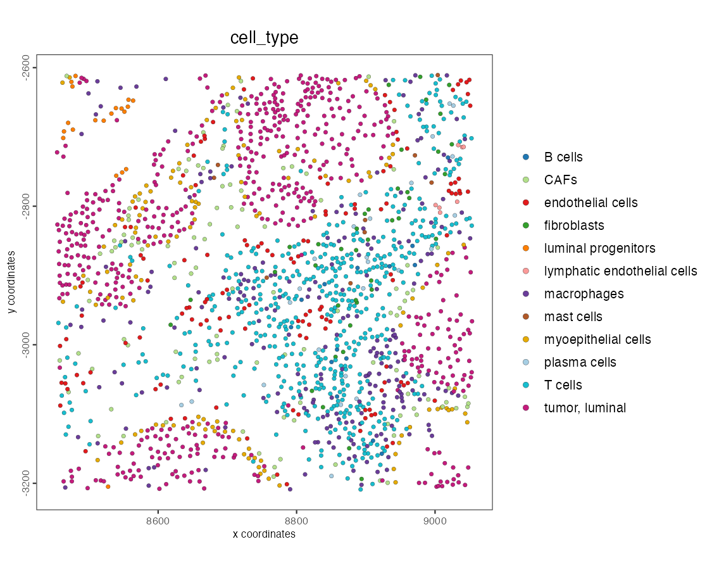
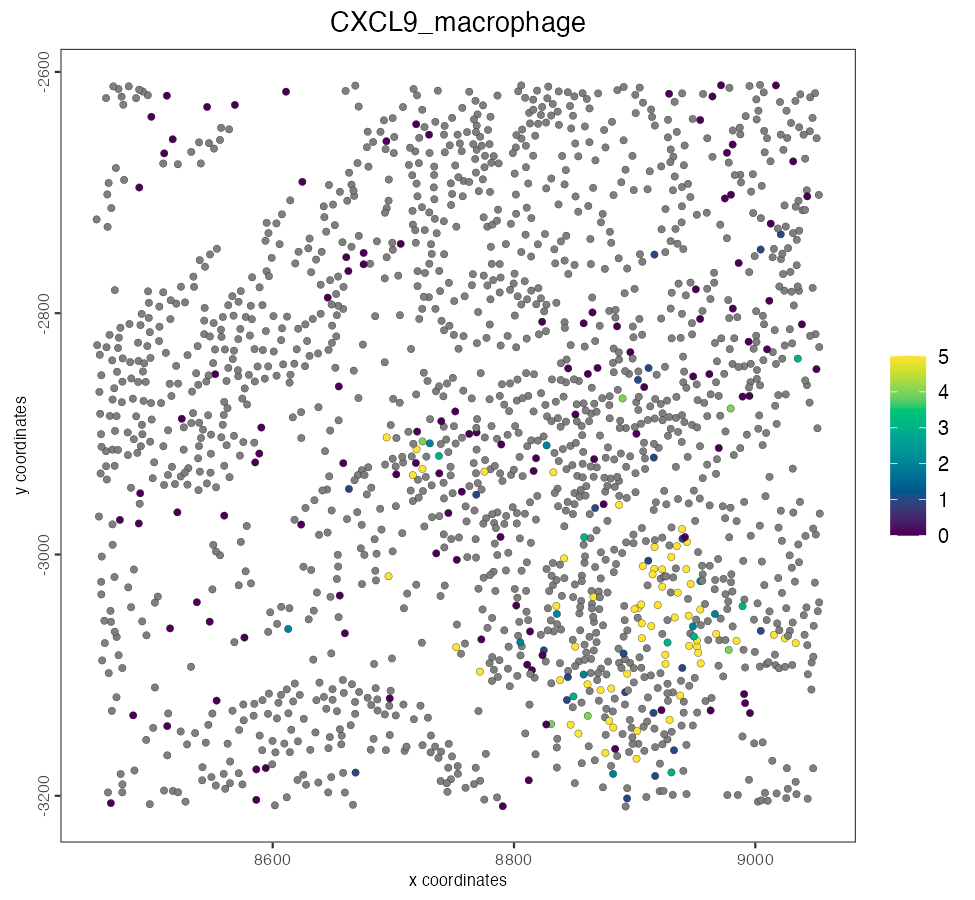
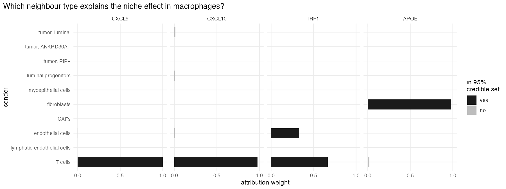
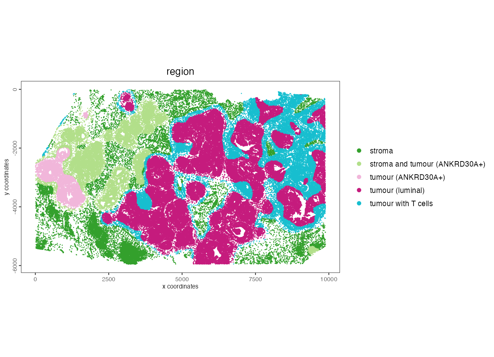
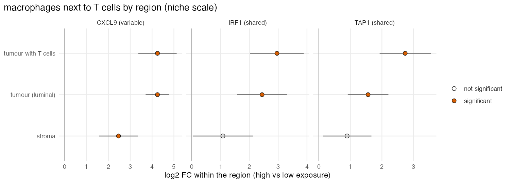

Interaction-changed features
Source:vignettes/interaction_changed_features.Rmd
interaction_changed_features.Rmd1 Overview
A cell’s expression depends partly on its neighbours. An immune cell
next to a tumour cell, or a macrophage among T cells, may switch genes
on or off. findInteractionChangedFeats() looks for these
interaction-changed features (ICF): genes whose
expression in one cell type, the receiver, changes with its
exposure to another cell type, the sender.
In imaging-based data this question has a trap. Transcripts leak
across cell boundaries, and segmentation is never perfect, so a T cell
that touches a tumour cell picks up some of the tumour cell’s
transcripts. A naive test then reports tumour genes as “induced” in T
cells. The default method since Giotto 4.3.6,
method = "edgeicg" (from the edgeicg package), is
built around this:
- it estimates, for every pair of cell types, how much of a touching neighbour’s expression leaks into a cell, and removes that leak cell by cell before testing;
- it tests three scales of exposure: touching cells (contact), the neighbours within about 75 µm (paracrine) and the regional neighbourhood of about 450 µm (niche);
- it calibrates the niche scale against spatially shifted copies of the tissue, and attributes each niche hit to the sender type that explains it best;
- it labels every hit by how likely it is to be an artefact, for example a gene that marks the sender;
- optionally, it estimates every effect within regions of the tissue (spatial domains, niches) and tests whether it differs between them.
The engine works on sums over cells, reads a GiottoDisk expression store in spatial windows without loading it, and runs in parallel.
This tutorial continues from the Atera Human Breast Cancer example: a whole section of 170,000 cells with an 18,000-gene panel, its cell types, and the motif analysis that found T cells deep inside tumour nests.
2 Setup
# edgeicg, and edgeicgrs for its compiled (Rust) kernels, which are optional but
# about 20 times faster; binaries from r-universe, no Rust toolchain needed
install.packages(c("edgeicg", "edgeicgrs"),
repos = c("https://drieslab.r-universe.dev", getOption("repos")))
# a gene set used below
install.packages("msigdbr")Region-specific effects (the last analysis below) need edgeicg 0.2.0 or later.
library(arrow) # load before terra or GiottoClass
library(Giotto)
library(GiottoDisk)
library(data.table)
project_dir <- "path/to/atera_project" # the project of the Atera breast exampleLoad the annotated object of the breast example:
g <- loadGiotto(project_dir, name = "annotated")The results on this page were computed from the 10x expression
matrix: the optional Aggregate step of the breast
example was skipped. With that matrix, Leiden clustering gives 19
clusters instead of 18, which were mapped to the same 15 cell types
(clusters 12 and 18 are both myoepithelial cells). The 10x matrix
assigns transcripts with 10x’s own segmentation, whereas
aggregateFeatures() assigns them by the cell outlines, so
about 2–3% of the counts per cell differ. If you aggregated, your
numbers will differ somewhat from the ones shown here.
3 Choose the features
edgeicg can test every gene; on this section all 17,000 detected genes take about 10 minutes with 8 workers, but about 40 GB of memory. A focused set is faster and lighter. We take the 2,000 highly variable features of the breast example and add the 200 genes of the MSigDB Hallmark interferon-γ response: the motif analysis found T cells among tumour cells, and interferon-γ is what activated T cells release.
The gene set matters here. Genes that are switched on in a few cells, such as the chemokines CXCL9 and CXCL10, are rarely among the highly variable features, which favour genes that separate cell types.
hvf <- fDataDT(g)[hvf == "yes", feat_ID]
ifng <- unique(subset(
msigdbr::msigdbr(species = "Homo sapiens", collection = "H"),
gs_name == "HALLMARK_INTERFERON_GAMMA_RESPONSE"
)$gene_symbol)
feats <- intersect(union(hvf, ifng), fDataDT(g)$feat_ID)
length(feats)[1] 21234 Run
icf <- findInteractionChangedFeats(g,
cluster_column = "cell_type",
selected_feats = feats,
spatial_covariates = TRUE,
workers = 8
)
icf$edgeicgEdgeICG: 169528 cells, 15 types, 2101 genes, 210 pairs (pass1 64 s, pass2 73 s, pass3 6 s)
leak fitted on: all (17423 genes)
hits: q < 0.05 and |log2 FC| >= 0.25 (q < 0.05 alone)
contact 3552 (6176)
paracrine 1354 (2055)
niche 1462 (1630), screen
attributed (receiver, gene): 936This takes about 5 minutes with 8 workers, with a peak of about 18 GB
of memory. The expression is read from the GiottoDisk store in spatial
windows; fewer workers use less memory. What the settings
do:
-
cluster_column: the cell types. Every ordered pair of types is a receiver and sender pair (210 here). -
selected_feats: the features to test. The leak is still estimated from all 17,423 detected features, which takes one extra pass over them (about 2 of the 5 minutes); see The leak. -
spatial_covariates = TRUE: adjusts the niche scale for smooth trends across the section (tissue zones), which otherwise produce niche hits of their own. It adds about 10% to the run time. -
min_lfc(default 0.25): a hit must also change by at least this log2 fold change. On a whole section even tiny, confounded differences become significant; the floor keeps effects that are large enough to matter. -
workers: parallel workers. Results do not depend on their number. -
methodis not given:"edgeicg"is the default.
The full fit is kept in icf$edgeicg; the table of hits
is icf$ICFscores.
5 Results
icf$ICFscores has one row per receiver, sender, scale
and feature with q < 0.1:
-
cell_type,int_cell_type: receiver and sender; -
scale: contact, paracrine or niche; -
log2fc: the fold change between receivers at high (90th percentile) and low (10th percentile) exposure to the sender; -
z,p.value,p.adj: the test, adjusted within each scale; -
class: how the hit could arise without an interaction; -
regional: a niche hit that recurs in three or more receiver types, more likely a tissue zone than an interaction; -
top_sender,alpha: for niche hits, the sender type the effect is attributed to and the share of the evidence it explains.
The classes are, in order of precedence:
| class | the gene … | read it as |
|---|---|---|
sender_marker |
is much higher in the sender than in the receiver | leaked or mis-assigned transcripts that the leak model did not fully remove |
other_marker |
marks a third cell type | the same, from a third type nearby |
own_down |
is a receiver gene going down next to a sender that expresses it much less | mixed or mis-segmented cells, or dilution |
clean |
none of these | a candidate interaction |
sc <- icf$ICFscores
dcast(sc[p.adj < 0.05], scale ~ class, fun.aggregate = length,
value.var = "feats") scale clean other_marker own_down sender_marker
<char> <int> <int> <int> <int>
1: contact 1063 906 1084 499
2: niche 625 391 296 150
3: paracrine 535 358 344 117At contact scale, more than two thirds of the significant hits are of
an artefact class. That is the leak problem in numbers; the rest of this
tutorial uses the clean hits.
5.1 Overview
plotICFOverview() counts the clean hits for every
receiver and sender pair at each scale. Dot size is the number of hits,
colour the share that go up.
type_order <- c("tumor, luminal", "tumor, ANKRD30A+", "tumor, PIP+",
"luminal progenitors", "myoepithelial cells", "fibroblasts", "CAFs",
"endothelial cells", "lymphatic endothelial cells", "T cells", "B cells",
"plasma cells", "macrophages", "mast cells", "adipocytes")
plotICFOverview(g, icf, cell_order = type_order)
Stromal and immune cells change most with their neighbours: macrophages next to fibroblasts, CAFs, endothelial cells and T cells, endothelial cells and fibroblasts in the tumour’s neighbourhood. Tumour cells change little at contact and more at niche scale.
5.2 The leak, and why the classes matter
plotICFLeak() shows the estimated leak: the share of a
touching sender’s expression that turns up in the receiver.
The leak is one number per receiver and sender pair, the same for every gene. edgeicg estimates it from all genes at once: in receivers touching the sender, each gene rises in proportion to how much the sender expresses it, and the slope of that relation across genes is the leak. A robust fit keeps genes with a real response to the sender from pulling the slope.
Which genes go into that fit matters. Genes chosen for being variable
or for marking cell types are the genes with the strongest real
differences, and they pull the estimate. On this section, the leak
estimated from the 2,101 selected features agreed only moderately with
the one from all genes (correlation 0.60, on average about 30% higher),
while 3,000 random genes reproduced it closely (0.99). That is why
edgeicg estimates the leak from all features in the expression, even
when you test only selected_feats.
plotICFLeak(g, icf, cell_order = type_order)
Small cells with large neighbours pick up the most: T cells next to tumour cells (0.41 next to ANKRD30A+ and 0.28 next to luminal tumour cells), and mast cells next to T cells and macrophages. Fibroblasts next to ANKRD30A+ tumour cells and CAFs are also high, which partly reflects how these types grade into each other.
Two settings change how the leak is estimated:
-
leak_genes = "tested"estimates it fromselected_featsonly. This saves the extra pass, but the leak then depends on your selection. -
leakreuses the leak of an earlier run, e.g.leak = icf$edgeicg. This is useful when you rerun with other settings on the same data, as in Region-specific effects below.
With a targeted panel of a few hundred genes there is no broader set to use, so the leak estimate is less certain; rely more on the classes below.
plotICFPair() shows every feature tested for one pair at
one scale. For T cells touching luminal tumour cells:
plotICFPair(g, icf, receiver = "T cells", sender = "tumor, luminal",
scale = "contact")
No tumour gene goes up significantly: the leak model removes the
transcripts a T cell picks up from the tumour cells it touches. Most
decreases are genes of other stromal types (other_marker)
or the T cell’s own genes going down (own_down). Few clean
hits remain, all small. T cells touching tumour cells look much like the
other T cells.
This is where estimating the leak from all genes pays off. With
leak_genes = "tested", the leak for this pair is estimated
at 0 from the 2,101 selected features, and three tumour genes, MSMB,
TSPAN8 and TNFSF10, come out as significant increases
(sender_marker, log2 FC 0.5–2.6). The class would still
have warned you, but the leak model should have removed them.
Where the leak is estimated lower than a strong marker’s spillover,
some of that marker remains. The sender_marker class flags
these hits: 499 at contact scale here, most between macrophages,
myoepithelial cells and stromal cells.
6 Interferon response near T cells
The macrophages tell a different story. Their clean hits next to T cells:
sc[cell_type == "macrophages" & int_cell_type == "T cells" &
class == "clean" & !regional & p.adj < 0.05][order(p.adj)][
1:12, .(feats, scale, log2fc, z, p.adj, top_sender, alpha)] feats scale log2fc z p.adj top_sender alpha
<char> <char> <num> <num> <num> <char> <num>
1: FGL2 paracrine 0.93 7.9 1.7e-11 <NA> NA
2: CXCL9 niche 4.25 7.6 8.8e-11 T cells 1.00
3: CIITA contact 0.71 7.2 5.6e-10 <NA> NA
4: CD74 contact 0.50 6.7 1.3e-08 <NA> NA
5: FGL2 contact 0.62 6.6 3.0e-08 <NA> NA
6: TAP1 niche 2.13 6.6 6.0e-08 T cells 0.96
7: CLEC10A contact 0.86 6.2 2.1e-07 <NA> NA
8: IRF1 niche 2.64 6.0 1.6e-06 T cells 0.68
9: WARS1 niche 1.93 5.9 3.0e-06 T cells 0.89
10: DAPP1 contact 1.19 5.6 4.7e-06 <NA> NA
11: SAMHD1 contact 0.48 5.6 6.1e-06 <NA> NA
12: CD200R1 contact 0.79 5.6 7.3e-06 <NA> NATwo programmes stand out. In T-cell-rich niches, macrophages switch
on the interferon-γ response: the chemokines CXCL9 and CXCL10, which
attract more T cells, the transcription factor IRF1, the
antigen-processing gene TAP1 and WARS1. Where they touch T cells, they
raise MHC class II (CIITA, the master regulator, and CD74). Both are
what macrophages do when activated T cells release interferon-γ.
log2fc is capped at ±4.25; CXCL9 is close to absent in
macrophages away from T cells.
6.1 Expression against exposure
A hit is a slope. plotICFExposure() shows the data
behind it: receivers binned by their exposure to the sender, and their
mean expression (as a share of the cell’s counts) in each bin. The first
point holds the unexposed cells.
plotICFExposure(g, icf, receiver = "macrophages", sender = "T cells",
feats = c("CXCL9", "CXCL10", "IRF1", "IDO1"), scale = "niche")
CXCL9, IRF1 and IDO1 rise steadily with the share of T cells around a macrophage. CXCL10 rises too, but it is also high in macrophages with no T cells nearby, so another source drives it there as well.
6.2 Where it happens
A 600 µm window around the macrophages with the most T cells nearby. The cell outlines coloured by cell type, and by their CXCL9 counts:
roi <- c(8454, 9054, -3209, -2609) # xmin, xmax, ymin, ymax
gz <- subsetGiottoLocs(g,
x_min = roi[1], x_max = roi[2], y_min = roi[3], y_max = roi[4])
# one color per cell type, as in the breast example
type_colors <- c(
"tumor, luminal" = "#c51b7d", "tumor, ANKRD30A+" = "#f1b6da",
"tumor, PIP+" = "#7a0177", "luminal progenitors" = "#ff7f00",
"myoepithelial cells" = "#e6ab02",
"fibroblasts" = "#33a02c", "CAFs" = "#b2df8a",
"endothelial cells" = "#e31a1c", "lymphatic endothelial cells" = "#fb9a99",
"T cells" = "#17becf", "B cells" = "#1f78b4", "plasma cells" = "#a6cee3",
"macrophages" = "#6a3d9a", "mast cells" = "#b15928", "adipocytes" = "#ffff99"
)
spatInSituPlotPoints(gz, show_polygon = TRUE, polygon_feat_type = "cell",
polygon_fill = "cell_type", polygon_fill_as_factor = TRUE,
polygon_fill_code = type_colors, polygon_alpha = 1, polygon_line_size = 0.1)
# raw CXCL9 counts per cell
spatInSituPlotPoints(gz, show_polygon = TRUE, polygon_feat_type = "cell",
polygon_fill = "CXCL9", polygon_fill_as_factor = FALSE,
polygon_fill_gradient_style = "sequential",
polygon_alpha = 1, polygon_line_size = 0.1)

The CXCL9-high cells (yellow, right) sit in the dense patch of T cells (cyan, left) at the lower right of the window; cells in the tumour and stroma above have almost none. They are mostly macrophages, but CAFs and fibroblasts in the same patch express CXCL9 too (15% of the CAFs in this window have 10 or more counts, against 19% of the macrophages). edgeicg calls the response to T cells in macrophages (niche q < 1e-10); in CAFs the effect points the same way but is not significant (q = 0.08). A map shows every cell; the test asks, per receiver type, whether expression follows the exposure to a sender.
6.3 Which neighbour explains a niche effect?
Neighbourhoods overlap: a T-cell-rich niche also holds stromal and
endothelial cells. For niche hits, edgeicg weighs the candidate sender
types against each other. plotICFAttribution() shows the
share of the evidence each sender explains; black bars form the 95%
credible set.
plotICFAttribution(g, icf, receiver = "macrophages",
feats = c("CXCL9", "CXCL10", "IRF1", "APOE"), cell_order = type_order)
The interferon genes are attributed to T cells. APOE, which macrophages also change with their niche, is attributed to fibroblasts instead: a different neighbourhood, and likely a different macrophage state.
6.4 Beyond macrophages
The same response shows up, more weakly, in stromal cells near T cells:
ifn <- c("CXCL9", "CXCL10", "IRF1", "STAT1", "GBP1", "TAP1", "IDO1")
sc[int_cell_type == "T cells" & cell_type != "macrophages" &
feats %in% ifn & class == "clean" & p.adj < 0.05][order(cell_type, p.adj),
.(cell_type, feats, scale, log2fc, p.adj)] cell_type feats scale log2fc p.adj
<char> <char> <char> <num> <num>
1: CAFs IRF1 paracrine 1.44 1.1e-03
2: CAFs TAP1 paracrine 1.12 8.3e-03
3: endothelial cells STAT1 contact 0.31 4.7e-04
4: fibroblasts STAT1 contact 0.38 4.0e-08
5: fibroblasts STAT1 paracrine 0.34 8.8e-05
6: fibroblasts STAT1 niche 0.46 7.9e-04
7: fibroblasts IRF1 contact 0.45 2.7e-03
8: fibroblasts GBP1 contact 0.39 3.1e-03
9: fibroblasts GBP1 paracrine 0.35 8.1e-03
10: fibroblasts IRF1 paracrine 0.57 1.3e-027 Region-specific effects
So far every effect is one number for the whole section. An
interaction can also hold in one part of the tissue only, or go in
opposite directions in two parts, so that the effect for the whole
section is weak or cancels out. With region_column, edgeicg
also estimates every effect within each region and tests whether it
differs between regions. The leak model and the rest of the model stay
those of the whole section.
7.1 Define the regions
Any label per cell works: spatial domains, an HMRF result, a pathologist’s annotation. Here we group cells by the cell types around them, the same neighbourhood edgeicg uses for the niche scale (a Gaussian of 150 µm), into five niches:
cx <- merge(pDataDT(g)[, .(cell_ID, cell_type)],
getSpatialLocations(g, output = "data.table")[, .(cell_ID, sdimx, sdimy)],
by = "cell_ID", sort = FALSE)
lv <- sort(unique(cx$cell_type))
ex <- edgeicg::edgeicg_exposures(cbind(cx$sdimx, cx$sdimy),
match(cx$cell_type, lv), length(lv), sigma_n = 150)
set.seed(1)
km <- kmeans(ex$N, centers = 5, nstart = 10, iter.max = 50)
# names from the main cell types of each cluster (round(km$centers, 2))
region_names <- c("tumour (ANKRD30A+)", "stroma", "tumour with T cells",
"tumour (luminal)", "stroma and tumour (ANKRD30A+)")
cx[, region := region_names[km$cluster]]
g <- addCellMetadata(g, new_metadata = cx[, .(cell_ID, region)],
by_column = TRUE, column_cell_ID = "cell_ID")
region_colors <- c("tumour (luminal)" = "#c51b7d",
"tumour (ANKRD30A+)" = "#f1b6da", "tumour with T cells" = "#17becf",
"stroma" = "#33a02c", "stroma and tumour (ANKRD30A+)" = "#b2df8a")
spatPlot2D(g, cell_color = "region", color_as_factor = TRUE,
cell_color_code = region_colors, point_size = 0.05,
point_shape = "no_border")
The T-cell-rich niche (cyan) rims the tumour nests on the right of the section, where the motif analysis found T cells deep inside tumour.
7.2 Run with regions
The same run as above, with region_column. The leak does
not change with regions, so we reuse it from the first run with
leak:
icf <- findInteractionChangedFeats(g,
cluster_column = "cell_type",
selected_feats = feats,
spatial_covariates = TRUE,
workers = 8,
region_column = "region",
leak = icf$edgeicg
)Reusing the leak skips the pass over all features, so this takes
about 3 minutes, with a peak of about 12 GB. The results for the whole
section (icf$ICFscores) are exactly those of the run above;
icf$ICFregion holds the region effects: for every entry
that differs between regions or is significant in at least one, one row
per region with
-
effect,log2fc,z,q: the effect within the region.log2fcuses the same exposure contrast as the whole section (10th to 90th percentile), so regions can be compared; -
n_cells,n_exposed: receivers in the region, and those exposed to the sender. A region is used for a receiver type with at least 50 of its cells, and for an entry with at least 20 exposed receivers; -
Q,q_het: the test of whether the effect differs between regions; -
pattern:shared(no difference),specific(significant in one region only),opposite(significant in one region, the other direction in another) orvariable(different strengths); -
class: the hit class, as inICFscores.
reg <- icf$ICFregion
dcast(unique(reg[class == "clean" & pattern != "shared",
.(feats, cell_type, int_cell_type, scale, pattern)]),
scale ~ pattern, fun.aggregate = length, value.var = "feats") scale opposite specific variable
<char> <int> <int> <int>
1: contact 101 225 294
2: niche 86 119 70
3: paracrine 93 241 1517.3 Is the interferon response local?
plotICFRegion() shows the effect in each region, with a
95% interval; filled points are significant in that region. For the
macrophages and T cells:
region_order <- c("tumour with T cells", "tumour (luminal)",
"tumour (ANKRD30A+)", "stroma", "stroma and tumour (ANKRD30A+)")
plotICFRegion(g, icf, receiver = "macrophages", sender = "T cells",
feats = c("CXCL9", "IRF1", "TAP1"), scale = "niche",
regions = region_order)
feats region n_exposed log2fc z q q_het pattern
1: CXCL9 tumour with T cells 2947 4.25 9.5 1.4e-17 7.8e-14 variable
2: CXCL9 tumour (luminal) 128 4.25 15.3 1.3e-48 7.8e-14 variable
3: CXCL9 stroma 298 2.47 5.5 2.9e-05 7.8e-14 variable
4: IRF1 tumour with T cells 2947 2.96 6.2 4.6e-07 1.0e+00 shared
5: IRF1 tumour (luminal) 128 2.44 5.5 2.3e-05 1.0e+00 shared
6: IRF1 stroma 298 1.08 2.0 7.5e-01 1.0e+00 shared
7: TAP1 tumour with T cells 2947 2.74 6.6 4.5e-08 8.7e-01 shared
8: TAP1 tumour (luminal) 128 1.56 4.8 8.3e-04 8.7e-01 shared
9: TAP1 stroma 298 0.90 2.3 6.2e-01 8.7e-01 sharedThe response is not confined to the T-cell-rich niche. Wherever
macrophages have T cells around them, in the tumour or in the stroma,
they raise IRF1 and TAP1 to a similar degree (shared).
CXCL9 rises everywhere too, but more strongly in the tumour niches than
in the stroma (variable). The other two niches have too few
macrophages near T cells to test.
8 Reading the results with care
-
Use the clean hits, and look at the data. The
classes flag the likely artefacts, but no rule catches all of them.
plotICFExposure()shows whether a hit follows exposure or rests on a few cells. - Cell types that grade into each other. Luminal progenitors next to luminal tumour cells have many hits, including tumour genes going up. Cells at the border of two clusters share features of both, so part of this is the labels rather than an interaction. The same holds for fibroblasts and CAFs.
- Effects that are too uniform. Exposure varies little for some receivers, such as myoepithelial cells, which line every duct and are always next to tumour cells. Their power is low.
-
Regions. A whole section gives a lot of power, so
effects of different strength in different regions are common
(
variable). A small region has few exposed receivers and noisy estimates; look atn_exposedand the interval inplotICFRegion().oppositeis called when one region is significant and another goes the other way with |z| of at least 2, so a one-region effect is now and then labelledoppositeby chance. Regions defined from the cell types themselves, as here, follow the exposure, so compare regions with similar exposure where you can. - Associations, not causes. A hit says expression changes with exposure. It does not say the sender causes it; both may follow a third factor. The attribution helps choose between sender types, not between sender and something unmeasured.
-
What was checked. On this section, with these cell
types and 3,000 genes, effects planted into real counts were found in
97% (contact), 88% (paracrine) and 78% (niche) of cases with
spatial_covariates = TRUE, and genes without a planted effect were called in 2.8% of cases. Without the spatial covariates, niche recall was 85% but genes without an effect were called in 6.1% of cases, mostly at niche scale. Splitting the T cells at random into two halves gave almost no hits between the halves (0.3% of tests with |z| > 3 at every scale). In simulations, the test between regions called 4–5% of entries without a region difference at p < 0.05, recovered effects confined to one region in 84% of cases and effects of opposite sign in two regions in 92%.
9 Settings
Settings are passed to findInteractionChangedFeats() or
collected with icfParam("edgeicg", ...):
| setting | default | what it does |
|---|---|---|
expression_values |
"raw" |
counts to model; edgeicg needs raw counts |
use_polygons |
TRUE |
touching cells from the cell outlines; otherwise nearest neighbours |
min_lfc |
0.25 | effect-size floor for the reported hits |
report_q |
0.1 | entries with q below this go into ICFscores
|
spatial_covariates |
FALSE |
adjust the niche scale for smooth spatial trends |
calibrate, min_shift
|
TRUE, 450 |
the spatial calibration of the niche scale (shift in µm) |
workers |
0 | parallel workers (mirai); 0 runs sequentially |
backend |
"auto" |
the Rust kernels of edgeicgrs when installed |
block_genes, window_cells
|
500, auto | memory per task: genes per block and cells per spatial window |
leak_genes |
"all" |
features the leak is estimated from: all features, or
"tested" (only selected_feats) |
leak |
none | reuse the leak of an earlier run (icf$edgeicg) |
region_column |
none | cell metadata column with a region per cell; adds
ICFregion
|
min_cells_region, min_exposed_region
|
50, 20 | receivers per region, and exposed receivers per entry and region |
method = "classic" runs the original permutation test,
the default before Giotto 4.3.6. It does not model the leak and loads
the full expression matrix, and it is kept for comparison only.